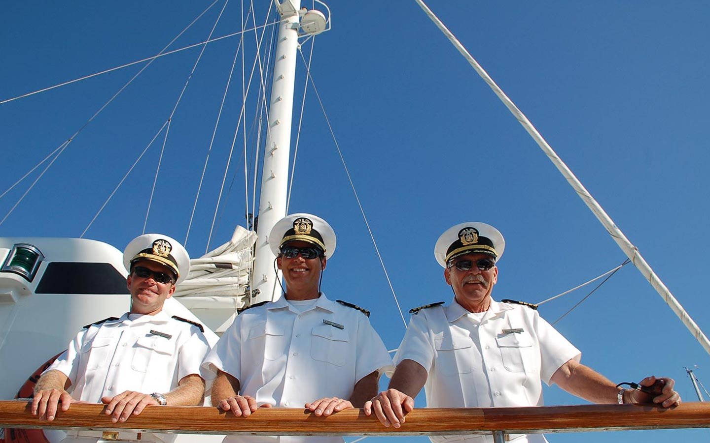

by Linda Mears
King Williams had just docked his fishing boat, the Princess Rachel, late one afternoon after a sea urchin run in the Santa Barbara Channel. The career diver, captain and oceanographer had approached that enviable stage in his life where he was pretty much doing what he wanted to do–fish.
While Williams was unloading his catch, two onlookers out for an afternoon stroll along the breakwater started a conversation, mostly by asking questions of the amiable fisherman, particularly about the Princess Rachel, a sleek 42-foot lobster boat. After some back -and-forth banter, including Williams' philosophy that no married man can happily own a boat unless he names it after his wife, one of the men, both circling the 70-year mark at the time, asked the seaman what he would do if he could do anything in the world he wanted.
Without a second's hesitation, Williams said he would build himself the biggest, best catamaran he could and sail off into the sunset, never to return. "Why a catamaran?" asked one of the men. "They're smooth sailing, hard to capsize and fast," Williams answered. "Well he asked, "can you build that kind of catamaran for me" Still thinking the dialog was nothing more or less than banter among boat lovers, Williams said, "Sure. Why not?"
At that point Charlie Munger, Berkshire Hathaway vice chairman, introduced himself and his friend and colleague Warren Buffett, Berkshire Hathaway chairman, both solidly entrenched in the upper tiers of the Forbes 400 list of America's richest people.
Williams however was thinking more along the line of a song called "Margaritaville" and jokingly asked Buffett if he was any relation to Jimmy, the singer/songwriter known for humorous chronicles of a laid-back seafaring life. At least that's the story Williams tells on himself.
Turns out, though, that Charlie Munger wasn't kidding and soon King Williams was off to St. John's River in Florida, a virtual boat building beehive, to set up shop for what would become a three year labor of love, sweat and tears.
A call to wife Rachel, namesake of the providential fishing boat, had the one-time-bank-teller-turned-deck-officer on her way to Florida within two weeks to serve as project coordinator for the catamaran under taking, which would, at its completion have employed 46 people, all of them full-time.
From the initial drawings, done on cocktail napkins, to the inclusion of fiber optic lighting for custom-etched glass panels in the salon, to the installation of the ultra-dense carpet from England, Munger was involved. He and the man whose dream it was were in contact by phone, by FAX and in person over the course of time to consider, reconsider , create and re-create.
While the final cost of the ship remains a secret, Williams recounts that during one of their early discussions, he estimated that building an 85-foot cat would be approximately $200,000 more than building a 65-foot cat. Munger gave the go ahead.
Finally it was time to test the waters, to bring the Channel Cat home, 7,300 miles away. After making sure that their "temporary" employees–all having acquired valuable specialized skills during their three-year tenure were placed in other, similar jobs, King and Rachel left St. Augustine. They began the long journey back to California.
After docking in Havana, Cuba, to wait out Hurricane Mitch, the quartet sailed through the Panama Canal, stopping at various ports on the way to Santa Barbara, averaging 260 miles a day on the open sea.
Although the Mungers, who live in Los Angeles, come to Santa Barbara frequently, they use the Channel Cat for family and friends judiciously says Rachel, so that she, as charter agent, is free to book the vessel for 200 events a year, with the stipulation that some of those charters must be for charities identified by Charlie Munger, most of which benefit the community. So King Williams got his catamaran and sailed right back into the harbor from which the dream was hatched, only a slight alteration from the original fantasy in which he sailed away forever.
And Charlie Munger, the captain's genie, benefactor extraordinaire? Is he happy at the outcome of the story? "He told me when it was finished that I was like Leonardo Da Vinci," recalls Williams. "All I could say was 'Thanks for giving me the paint.'"